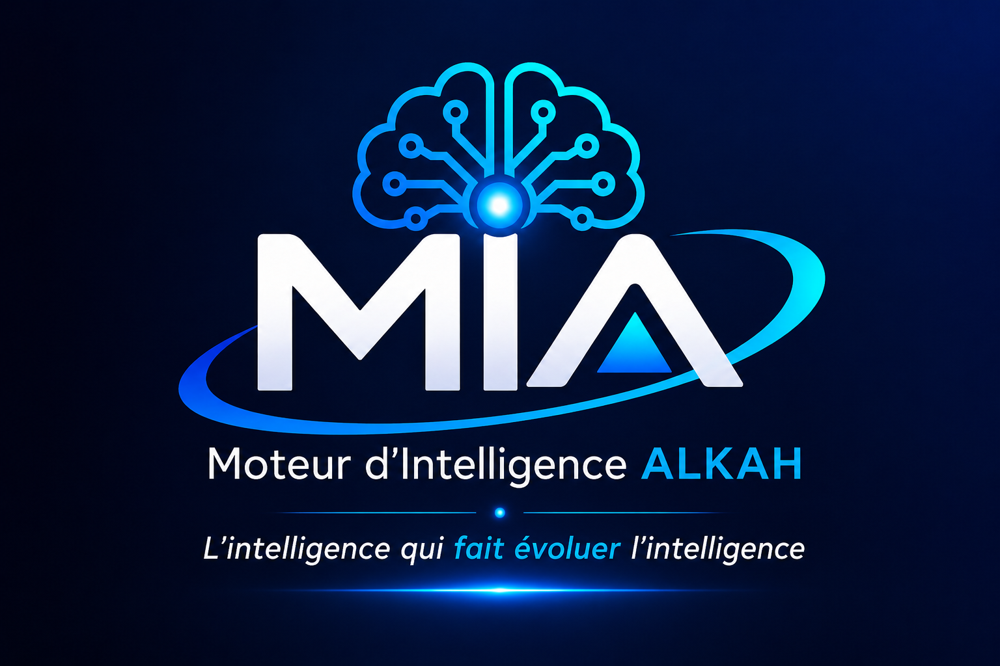

Mémoire
Retrouver les informations utiles.

ALKAH-BRAIN · MIA
Un cerveau numérique local conçu pour rassembler vos informations, vos idées, vos projets et votre mémoire, puis vous aider à les comprendre et à avancer étape par étape.
Faciliter la technologie pour les technophobes.
MIA · PRÉSENCE NUMÉRIQUE
MIA reste prête à vous accompagner, à chaque nouvelle idée, chaque question, chaque projet.
01 · LA MISSION
Rendre la technologie plus simple, plus humaine et plus compréhensible.
Vous n’avez pas besoin de parler comme une machine. Vous expliquez votre besoin avec vos propres mots.
MIA organise le contexte disponible, relie les informations utiles et vous accompagne progressivement.
L’humain garde la décision finale.
02 · LE PARCOURS
03 · LES CAPACITÉS
Retrouver les informations utiles.
Garder le fil des projets.
Examiner les informations avec méthode.
Présenter les éléments utiles à la décision.
Vous gardez le contrôle.
Construire étape par étape.